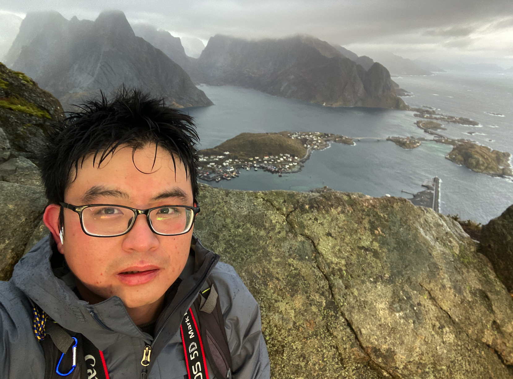
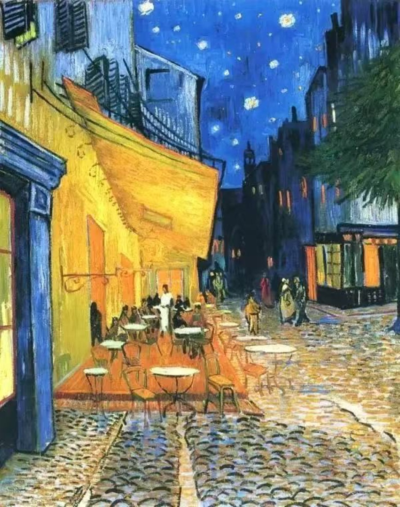
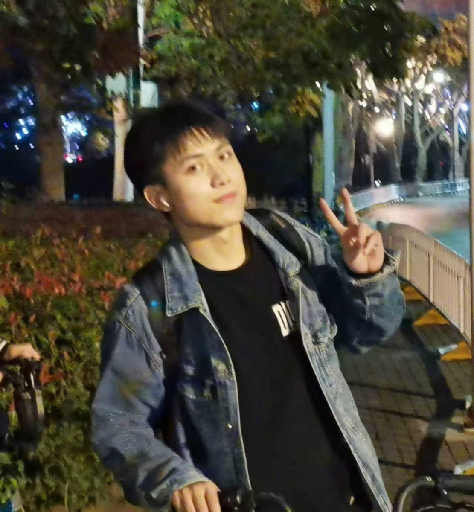

Team
The people behind the Bao Lab
Principal Investigator

PI
Feng Bao is PI at the College for Future Information Technology (未来信息创新学院),
Fudan University (复旦大学). His research centers on statistical learning and AI methods for
biology and medicine, with a focus on self-supervised representation learning,
multi-modal information fusion, and causal inference. He applies these methods to
spatial omics reconstruction, drug target discovery, and complex disease phenotyping.
He received his Ph.D. from Tsinghua University, completed a postdoc at UCSF, and
was a Visiting Scholar at Harvard / Dana-Farber Cancer Institute.
2024–present — PI, Fudan University (复旦大学), Shanghai
2019–2024 — Postdoc, UCSF (Advisors: Steven J. Altschuler & Lani F. Wu)
2018–2019 — Visiting Scholar, Harvard / Dana-Farber (Advisors: Guo-Cheng Yuan & Long Cai)
2014–2019 — Ph.D. in Engineering, Tsinghua University (Advisor: Academician Qionghai Dai)
2010–2014 — B.Eng. in Electronic Engineering, Xidian University
Members
2023
2024
2025
Qianqian Li 李芊芊
PhD Candidate
M.S.: Chinese University of Hong Kong (香港中文大学)
2026


Join Us
Open Positions
We are looking for motivated researchers at all levels who are excited about working
at the intersection of AI and biology. If you are interested in joining the Bao Lab,
please send your CV and a brief statement of research interests to
fbao@fudan.edu.cn.